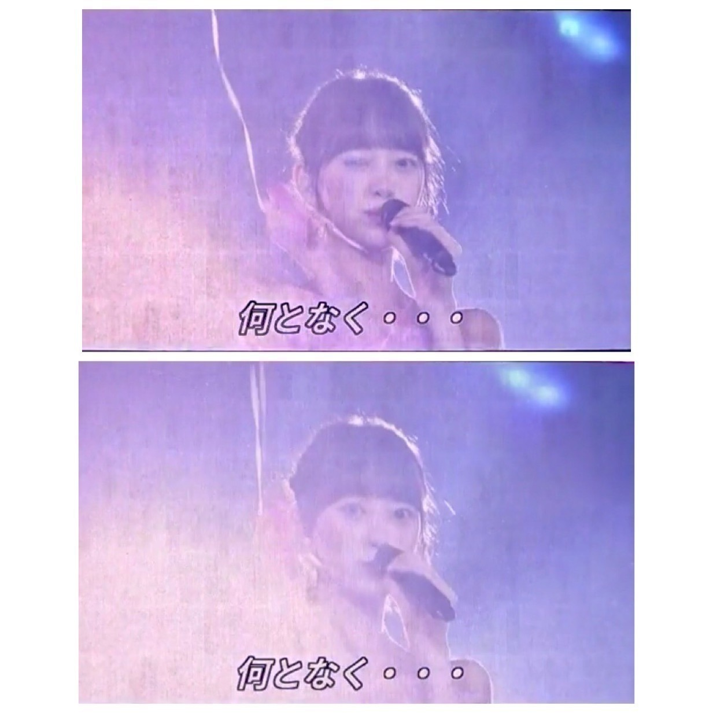

2018/0903Mon不思議だね。

名古屋ドーム2日間のブログを途中まで書いていたので
アップさせていただきます。
来てくださった皆さん
ありがとうございました。
実は、私の体調がライブの3日前から優れず
病院に行き点滴と注射をし何とかステージに立たせていただけることができました
元々扁桃腺が腫れて高熱が出やすかったのもありますが、
本番前に体調を崩してしまった自分が許せず悔しさもあり
苦しくて...
ずっとずっと名古屋ドームに立てる日を楽しみにしていたのでこのまま出られないのは本当に悔しいって思って無理を言い出させていただきました。
もっと身体を強くしなきゃって改めて思いました。
でも、こんなに暑い中
並んで来てくださって
たのしみに待っていてくださってる方がいて
だから私もより
皆さんに会いたい、会いに行かないといけない
っていう強い気持ちが自分の中にずっとあって...
声援やタオルやサイリウムやうちわ
たくさん見えています
100%のパフォーマンスができなくて
ごめんなさい。でも、心の底から
楽しかったです...本当に。
あの景色を見ることができてよかったです
本当に、ありがとうございます
仙台公演は医者とスタッフさんとの話し合いで
出演できませんでしたが会場でメンバーと
ファンの皆さんが私の名前でコールアンドレスポンスをしてくれたと聞いて、嬉しかったです。
またライブできたらいいな...
楽しみにしていてくださった方々
スタッフさん メンバー
ご心配、ご迷惑をおかけして申し訳ありませんでした。
名古屋ドームの初日に実はジコチュープロデュースで"空気感"を披露させていただきました
モニターの写真で少しでも
来られなかった方にお伝えできれば...
サブ地元。名古屋で、
しかもこのほんわかメンバーで披露できて
リハも含め凄く楽しくて
終わったあとにみんなが楽しかったって
言ってくれたのが何よりも嬉しかったです
実はかなり演出にこだわりました

左から楓、私、桃子、れな
まず洋服
頭先から足先まで私が私物を取り入れつつ
メンバーをコーディネートしました
楓はスタイルの良さを生かして
白のショートパンツに
お腹チラ見せで"ヘルシー元気女子"
くすみブルーが
大人っぽくて似合ってました
私はオフショルの淡いピンクワンピースで
メイクもアイシャドウからチークリップまで
ar風ガーリーで"にこにこ系女子"
桃子は上品な感じとちょっと個性的な感じを
出したくて赤を基調にしたお利口スタイルに
しました！本人が着たいって言った服に。
黒髪に赤が華やかでした
"お母さんに紹介したい癒し系女子"
れなはモノトーンのイメージがあるし
現役大学生だから白Tで抜け感を出しつつ
帽子ベルトブーツでいい女感をだして
"何でもできる知的女子"
私服かなっていうくらい着こなしてくれました
みんなの意見も取り入れながら
似合いそうなスタイリングをしてみました〜

あとはこの1人ずつのパーソナルデータ。
私が実際にインタビューをして
スタッフさんに作っていただきました
ありがとうございます
恋愛シュミレーションゲームみたいにしたくて
1人1人違う雰囲気の女の子像で
作らせていただきました

乃木恋リアルも久しぶりで緊張したなぁ。。笑
シチュエーションも
名駅前待ち合わせ(名古屋といえばね！)
付き合って2年(空気感の歌詞より)
と、少し名古屋要素と歌詞の要素を
いれてみました
空気感の歌詞、甘くて好きです

ふわふわとした私のすきな世界観で
本当にジコチューなプロデュースでしたが
幸せでした
ありがとうございました
では。
2018/09/03 14:24


コメント(749)
体調はどうかな⁉️幾らから良くなっていればいいと思っています
早く元気な未央ちゃんが見たいです
(*^▽^)/★*☆♪
ゆっくり休んで治して下さいね。
お大事に。
早くよくなるといいですね！
めちゃくちゃかわいいです\♡/
未央奈大好きです♡
病み上がりの時は、あまり焦らず・急がず・落ち着いてね。
未央奈がもとの元気になるまで、気長に見守っています。
次は仙台必ず来てね
仙台駅ビルの展示にみおちゃんのパネルあって一緒に写真撮ってたヒトたくさんいたよ(^O^)v
いつも通り笑顔な未央奈戻ってきておくれ！！！握手会行くから待っといてや！！！
体調は如何ですか？
お大事にしてくださいね。
写真もありがとうございます！
いつも応援しています！
これからも頑張って！！
応援してます！
無理せず、完全復活待っています
早く未央奈に会いたいなぁ。
それまでは、ゆっくり休んでね！
お大事にー！m(_ _)m
幕張の全握では、会えたらイイなー♪＼(^o^)／
体調が悪い中名古屋公演出てくれて、本当に本当にありがとう。そしてお疲れ様(´；ω；｀)
名古屋1日目参戦したけど、全然そんな素振り見せずにいつも通りキラキラしてる未央奈見て、改めて好きって思ったし応援してて良かったなって思ったけど、体調悪いってことに気付けなかった自分もどこか悔しいなって思います。
そしてジコチュープロデュース見れて嬉しかった！乃木恋可愛すぎるし空気感選曲するあたりさすが未央奈！！！
これからもずっとずっと大好きです！！！たくさんの幸せをいつもありがとう(^-^)
でもあまり無理しないでゆっくり静養してください。まだまだ機会はいくらでもありますから。
握手会でお会い出来るのを楽しみにしています。
これからも無理せず、自分を労ってね！
すずほりコント最高でした！！
堀ちゃん役にしっかりはまってたよ(笑
乃木恋、空気感楽しませていただきました。
サブ地元だけに、いつもより自然なみおな素敵でした。
ジコチュー企画は、れなち推しとしては大満足のステージになりました。
れなち、いつもああいう服着てるよ。
みおなありがとう。
2期最高だね。
扁桃腺炎、早く治りますように。
くれぐれもお大事に。
SNSからもしばらく離れて、眠れるだけ眠りましょう。
名古屋のツアーの事とか宮城公演の事、思う事はたくさんあるだろうけどあまり自分を責めないで欲しいです
自分の事を許してあげていいんだよ☆もっと誉めてあげていいんだよ☆☆
未央奈のファンはいつでもどこでも未央奈の味方やねんでぇ
未央奈大好きやぁ～
扁桃腺お大事に！
行きたかったなー
あとは万全の状態になるまで焦らずゆっくりやお！
これからも応援しています大好き
回復傾向とのこと、安心しました。
食事をする笑顔の堀さんが目に浮かび、思わず涙目になりました。
ライブの件、申し訳なさと悔しさが、ひしひしと痛烈に伝わってきました。
でも現在（今）を守るために、未来まで潰さなくて良かったですよ。
それがファンの想い。
次のステージに立つ姿、是非見に行きたいです。
焦らず確実に元気になって、色々な堀さんを魅せて下さい。
恒例のウインクも。
沢山の温もりに守られて、堀さんは幸せですよ。
その期待に応えられるために、準備準備です。
メッセージ届くかな、暫く控えます。
頑張って行きましょう！
大変な時は無理せず休んで！
名古屋ライブお疲れ様。
未央奈の強い意志が聞けてうれしいよ
宮城のライブには来ることが出来なかったかもしれないけど、「そんなバカな…」では未央奈の顔が1番に浮かんで…
今はゆっくり療養してまた変顔が見られる日を楽しみにしてます。
ブログ更新本当にありがとう。
お大事に。
早く治して元気になって戻ってください！！
ずっとずっと応援してます！
中3のカケヒコです。
とりあえず、未央奈がちょっとずつ元気になっていそうで、嬉しいです。
乃木坂のメンバーのみんなは、自分のことよりファンのことを第一優先してくれているんですね。
本当に感謝です。
だから、未央奈は何も悪くないですよ。未央奈の笑顔に救われた人はたくさんいます。
メンバーみんなの努力にはかなわないと思いますが、コメントを書くことでメンバーの力になれたらいいな、と思ってます。
未央奈が元気で帰ってくるまで待つと約束するので、安心してくださいね。
お疲れ様！今はゆっくり休んでね！
私は名古屋初日に参戦しました！
未央奈ちゃんの自己中プロデュース、最高でした！！
空気感のみんなの衣装、乃木恋リアル、、
私はもちろん未央奈ちゃんって叫んだよ♡♡
最高の時間をありがとう！！
これからも頑張ってね！！
たくさん悔しい思いをしたと思うけどまずは元気になることが一番だよ。
未央奈のファンを想う気持ちは十分伝わっているよ。
元気一杯の未央奈を楽しみに待ってるから焦らずしっかり治してね。
空気感見たかったな〜
衣装からプロデュースしてたとかすごいな
体調は大丈夫かな？また元気な姿を早く見たいよ
ひろっぴー
仙台のライブに2day s参加しました！みおなちゃんが参加できないのはショックでしたが、みおなちゃんのコールアンドレスポンスを見て、乃木坂ってすごいと感じました！！
次は、元気なみおなちゃんをライブで見るのが、目標です！！
これからもお大事にして下さい
応援しています‼︎
ブログ更新、ありがとうございます♪
お加減いかがですか？
少しはよくなってきたのかな。
1日でも早く全快することをお祈りしてます…‼︎
名古屋ドームのライブの前から、あまり体調が良くなかったんですね。
未央奈の体のことは心配だし、できれば無理をしてほしくないと思うけど…
サブ地元での名古屋でのライブだし、少し無理してでも頑張って出たかったという気持ちはよく分かります。
何よりも、結果的に未央奈が『楽しかった』『出てよかった』って思えていることが本当に良かった…‼︎
未央奈が頑張っている以上、やっぱり報われてほしいなって思うので♪
コールアンドレスポンスのエピソード、このブログのコメントを見て知りました。
こういうのって、嬉しいですよね♪
自分も1人のファンとして、未央奈が辛い時、弱っている時に力になれるような人間になりたいって思ってます。
自分は現地にいくことはできなかったけど、こういったファンの方々の行動を見聞きすると、自分と同じような考えを持っている人が数多くいるんだなって感じて、とても嬉しく思います♪
今年は乃木坂全体でのライブはないようですが、乃木坂の活動は来年、再来年と続きます。
また楽しいパフォーマンスを見せてください‼︎
ではでは、また。
明日も未央奈にとっていい1日になりますように♪
お疲れ様でした！
いつも最善を尽くしていました。
お体に気をつけて下さい。
ずっと大好き！
また無理せず活動して欲しいです。
ブログや775更新嬉しいです(*´`)
みおなの気持ちは十分伝わってますから
元気なみおなをずっと待ってます
まだ元気なホッちゃんみれるのたのしみにしてます！
頑張れ！
扁桃腺炎大丈夫？？(じゃないよね )
また元気な未央奈が見たいから無理しないようにして欲しい！！ほんとに可愛そう
早く元気になりますように！！
大変だと思うけど自分の体調を1番に！！
また、ブログ更新楽しみにしてるね！！
(●o≧д≦)o頑張れｪｪｪ♪未央奈❤
わたしもよく扁桃腺腫れて熱出るから
辛さわかるよ…。
未央奈ちゃんのプロデュースすごく
可愛い世界観で素敵です
コメントする